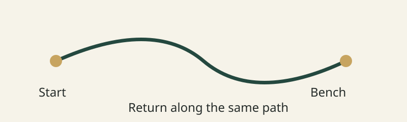

Pick a turnaround point
At the bench? At the bridge? Decide which landmark means it is time to come home.
Weekend Walks.
At the bench? At the bridge? Decide which landmark means it is time to come home.
Ten minutes out means another ten back. Keep that return trip in mind before picking a path.
Check the weather before leaving. Shoes, water, jacket: bring what the route and the day call for.
Start here. Walk to the bench. Take a break, then return the same way. This drawing is an example only, not a trail map.

Look for closures and posted signs. Mud after a storm? Choose another path.
Directions can stay handy. Put the other notifications aside and look around for a while.
A place to go. A time to head back. Ready for a short walk?
Weekend Walks: a student project about planning a small break outdoors. The landscape photos are inspiration, not recommended routes.